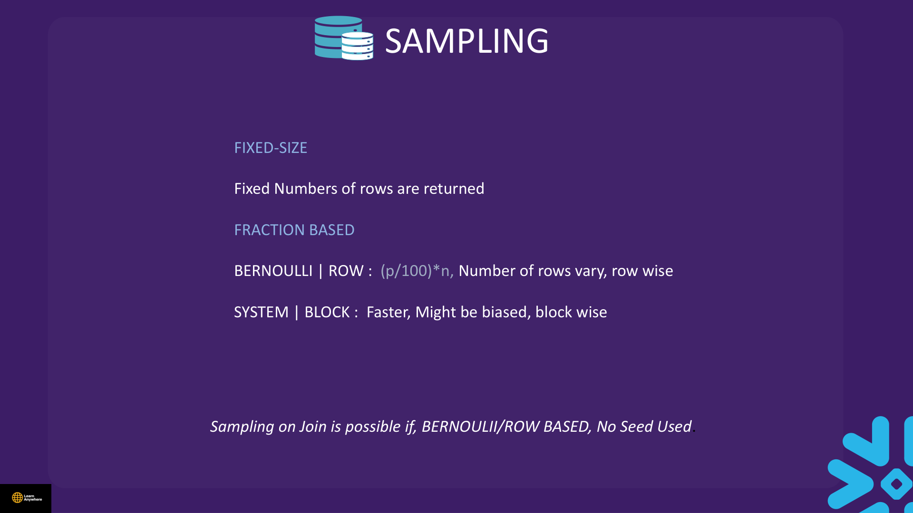
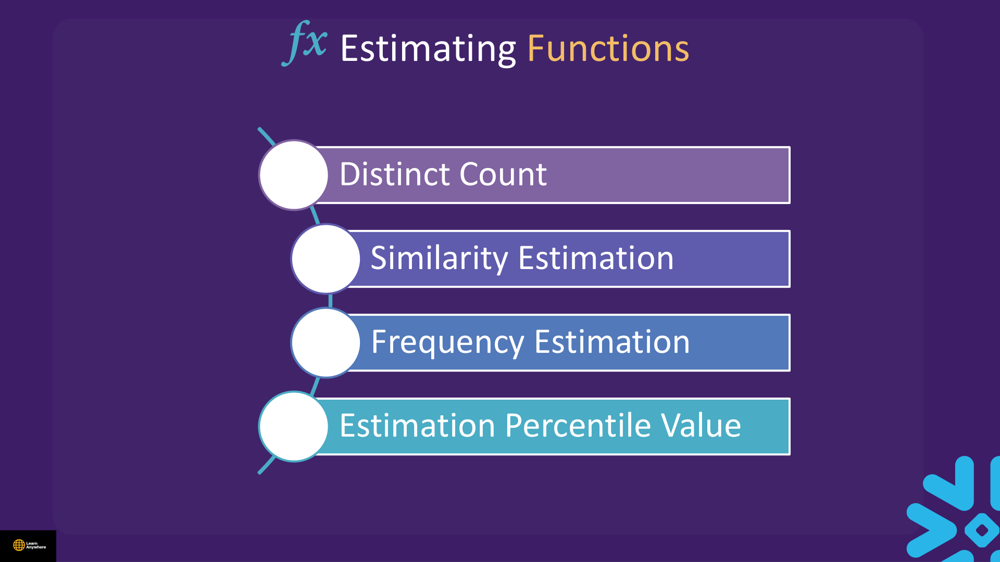
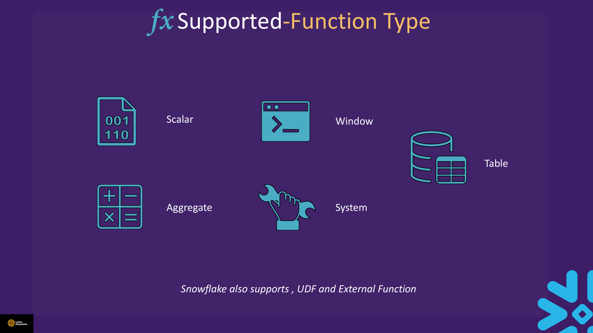

Lectures in this section
Every lecture below links to the notes that cover it.
- Demo : Sequence 3:40 More Features of Snowflake/Sequence.txt
- Sampling Concept 2:03
- Demo : Sampling 3:25 More Features of Snowflake/Sampling.txt
- Demo : Estimation Functions 7:13 More Features of Snowflake/Estimation Functions.txt
- Snowflake Supported Function 3:30
- Quiz
Demo : Sequence
Course file: More Features of Snowflake/Sequence.txt
Sequences generate unique integers across sessions. Defaults: START = 1, INCREMENT = 1. Snowflake does not guarantee gap-free sequences — rollbacks and distributed generation may skip values.
USE ROLE ACCOUNTADMIN;
USE WAREHOUSE COMPUTE_WH;
USE DATABASE la_db;
USE SCHEMA la_schema;
CREATE OR REPLACE SEQUENCE sequence_sample START = 1 INCREMENT = 1;
SHOW SEQUENCES;
SHOW SEQUENCES LIKE '%s%';
SELECT sequence_sample.NEXTVAL; -- 1
CREATE OR REPLACE TABLE sequence_table (i INTEGER);
INSERT INTO sequence_table (i) VALUES (sequence_sample.NEXTVAL);
INSERT INTO sequence_table (i) VALUES (sequence_sample.NEXTVAL);
INSERT INTO sequence_table (i) VALUES (sequence_sample.NEXTVAL);
SELECT i FROM sequence_table;
CREATE OR REPLACE SEQUENCE sequence_sample2 START = 1 INCREMENT = 5;
SELECT sequence_sample2.NEXTVAL AS a,
sequence_sample2.NEXTVAL AS b,
sequence_sample2.NEXTVAL AS c; -- 1, 6, 11
ALTER SEQUENCE sequence_sample RENAME TO seq_name;
DROP SEQUENCE IF EXISTS sequence_sample;AUTOINCREMENT / IDENTITY columns
Table columns can auto-generate integers without an explicit sequence object — common in load-time transforms (see Section 5).
CREATE OR REPLACE TABLE orders (
order_id NUMBER AUTOINCREMENT START 1 INCREMENT 1,
customer VARCHAR,
amount NUMBER
);
INSERT INTO orders (customer, amount) VALUES ('Acme', 100);
SELECT * FROM orders; -- order_id populated automaticallyseq_name.NEXTVAL. AUTOINCREMENT is a column property — you omit that column on INSERT and Snowflake fills it in.
Sampling Concept
When exploring large tables, reading every row is expensive. Snowflake supports table sampling to scan a subset of rows or micro-partitions — useful for profiling, QA, and approximate analytics.
Fixed-size versus fraction-based sampling
Sampling comes in two shapes. Fixed-size sampling returns an exact number of rows — for example SAMPLE (100 ROWS). Fraction-based sampling takes a percentage of the table; the number of rows returned varies with table size.

| Method | Syntax keyword | Behaviour |
|---|---|---|
| Row sampling | BERNOULLI (default) or ROW |
Computes (p/100) × n row by row — each row included independently with the given probability, so the returned count varies. May scan more data than it returns. |
| Block sampling | SYSTEM or BLOCK |
Works block by block at the micro-partition level — faster on huge tables but can be biased if data is clustered within partitions. |
| Fixed-size | SAMPLE (n ROWS) |
Returns exactly n rows regardless of table size. |
Use SEED(n) for repeatable samples within a session. Disable result cache when comparing sample sizes: ALTER SESSION SET USE_CACHED_RESULT = FALSE.
BERNOULLI/ROW-based methods and without a SEED. Block sampling cannot be used in join contexts.
Demo : Sampling
Course file: More Features of Snowflake/Sampling.txt
ALTER SESSION SET USE_CACHED_RESULT = FALSE;
SELECT COUNT(*) FROM snowflake_sample_data.tpch_sf1.customer;
-- Full table: 150,000 rows
-- Block / SYSTEM sampling — ~1% of micro-partitions
SELECT COUNT(*) FROM snowflake_sample_data.tpch_sf1.customer
TABLESAMPLE SYSTEM (1);
-- Row / BERNOULLI sampling — ~20.3% of rows (default method)
SELECT COUNT(*) FROM snowflake_sample_data.tpch_sf1.customer
TABLESAMPLE BERNOULLI (20.3) SEED (10);
-- Fixed row count (SAMPLE shorthand)
SELECT COUNT(*) FROM snowflake_sample_data.tpch_sf1.customer
SAMPLE (100 ROWS);TABLESAMPLE and SAMPLE are equivalent. Percentage must be 0–100. SEED makes the sample reproducible. Block sampling is cheaper but can skew if data is clustered.
Demo : Estimation Functions
Course file: More Features of Snowflake/Estimation Functions.txt
Estimation functions trade exactness for speed on large datasets using probabilistic data structures. Snowflake groups them into four families — each with a named algorithm and optional ACCUMULATE/COMBINE/ESTIMATE variants for incremental pipelines.

| Family | Algorithm | Functions | Notes |
|---|---|---|---|
| Distinct count | HyperLogLog (HLL) | APPROX_COUNT_DISTINCT, HLL_ACCUMULATE, HLL_COMBINE, HLL_ESTIMATE |
Counts distinct rows without storing every unique value. |
| Similarity estimation | MinHash | MINHASH, APPROXIMATE_SIMILARITY |
Compares two or more datasets; output ranges from 0 (completely distinct) to 1 (identical). |
| Frequency estimation | Space-Saving | APPROX_TOP_K, APPROX_TOP_K_ACCUMULATE, APPROX_TOP_K_COMBINE, APPROX_TOP_K_ESTIMATE |
Approximates the most frequent values in a column. |
| Percentile estimation | t-Digest | APPROX_PERCENTILE, APPROX_PERCENTILE_ACCUMULATE, APPROX_PERCENTILE_COMBINE, APPROX_PERCENTILE_ESTIMATE |
Returns approximate values; works only on numeric columns; may return a value not present in the dataset. |
Approximate distinct count (HLL)
ALTER SESSION SET USE_CACHED_RESULT = FALSE;
-- Exact — slow on billion-row tables
SELECT COUNT(DISTINCT wr_order_number)
FROM snowflake_sample_data.tpcds_sf100tcl.web_returns;
-- Approximate — much faster; low error rate (~1–2% typical)
SELECT APPROX_COUNT_DISTINCT(wr_order_number)
FROM snowflake_sample_data.tpcds_sf100tcl.web_returns;Approximate top-K
SELECT hd_buy_potential, COUNT(*) AS num
FROM snowflake_sample_data.tpcds_sf100tcl.household_demographics
GROUP BY hd_buy_potential
ORDER BY num DESC
LIMIT 5;
SELECT APPROX_TOP_K(hd_buy_potential, 5, 10000)
FROM snowflake_sample_data.tpcds_sf100tcl.household_demographics;Approximate percentile
APPROX_PERCENTILE uses the t-Digest algorithm. It returns approximate quantile values, works only on numeric columns, and may return a value that is not actually present in the dataset — unlike an exact PERCENTILE_CONT.
CREATE OR REPLACE TABLE testtable (c1 INTEGER);
INSERT INTO testtable SELECT SEQ4() FROM TABLE(GENERATOR(ROWCOUNT => 11));
SELECT APPROX_PERCENTILE(c1, 0.1) FROM testtable;MinHash similarity
MINHASH builds a sketch of a dataset; APPROXIMATE_SIMILARITY compares sketches from two or more tables. Output ranges from 0 (completely distinct) to 1 (identical).
CREATE OR REPLACE TABLE sample_table1 (
id INT, name VARCHAR(255), city VARCHAR(255), state VARCHAR(255)
);
CREATE OR REPLACE TABLE sample_table2 (
id INT, name VARCHAR(255), city VARCHAR(255), state VARCHAR(255)
);
INSERT INTO sample_table1 VALUES
(1,'John Doe','San Francisco','CA'), (2,'Jane Doe','New York','NY'),
(3,'Peter Smith','Chicago','IL'), (4,'Susan Jones','Los Angeles','CA'),
(5,'David Williams','Seattle','WA');
INSERT INTO sample_table2 VALUES
(1,'John Doe','San Francisco','CA'), (2,'Jane Doe','New York','NY'),
(3,'Peter Smith','Chicago','IL'), (4,'Susan Jones','Los Angeles','CA'),
(5,'David Williams','Seattle','WA'), (6,'Mary Johnson','Dallas','TX'),
(7,'Michael Brown','Miami','FL');
SELECT MINHASH(5, *) FROM sample_table1;
SELECT APPROXIMATE_SIMILARITY(mh)
FROM (
SELECT MINHASH(100, *) AS mh FROM sample_table1
UNION ALL
SELECT MINHASH(100, *) AS mh FROM sample_table2
);Snowflake Supported Function
Snowflake ships hundreds of built-in functions grouped by role in a query. Know the categories for the exam and for load-time transforms in Section 5. Snowflake also supports user-defined functions (UDFs) and external functions.

| Category | Behaviour | Examples | Typical use |
|---|---|---|---|
| Scalar | Returns one value per invocation. | CEIL(135.135) → 136; CONCAT, CAST, COALESCE, DATEADD |
Per-row expressions in SELECT, WHERE, and load transforms |
| Aggregate | Returns one value per group of rows. | COUNT, SUM, AVG, APPROX_COUNT_DISTINCT, LISTAGG |
Group summaries — require GROUP BY or whole-table aggregation |
| Window | Aggregate-like functions over a subset of rows within the input set, without collapsing rows. | ROW_NUMBER, LAG, ANY_VALUE, RATIO_TO_REPORT, SUM() OVER (...) |
Per-partition calculations — running totals, rank, share-of-group |
| System | Control functions that execute actions in the system. | CURRENT_USER, SYSTEM$PIPE_STATUS, SYSTEM$ABORT_SESSION(...) |
Session control, account metadata, administrative actions |
| Table | Returns a set of rows for each input row — zero, one, or many rows, each with one or more columns. | FLATTEN, GENERATOR, VALIDATE, RESULT_SCAN |
Row-generating functions; often used with TABLE(...) |
Window function example
RATIO_TO_REPORT computes each row's share of a partition total — useful for percentage breakdowns without a separate aggregation step:
SELECT province, store_ID, profit,
100 * RATIO_TO_REPORT(profit) OVER (PARTITION BY province) AS percent_profit
FROM store_profit
ORDER BY province, store_ID;Functions allowed in COPY load-time transforms
The subquery inside COPY INTO … FROM (SELECT …) may use scalar functions only — no aggregates, no window functions, no subqueries that return multiple rows. Allowed examples from the course labs:
- String:
CONCAT,SUBSTR,TRIM,UPPER - Conversion:
CAST,TRY_CAST,TO_BINARY,TO_VARCHAR - Conditional:
COALESCE,IFF,NVL - Date/time scalars:
TO_DATE,TO_TIMESTAMP
AUTOINCREMENT columns are populated by Snowflake during load — omit them from the column list and transform SELECT.
Practical Lab — Sequence & Sampling
CREATE OR REPLACE SEQUENCE lab_seq START = 100 INCREMENT = 10;
CREATE OR REPLACE TABLE lab_ids (id INT, label VARCHAR);
INSERT INTO lab_ids VALUES (lab_seq.NEXTVAL, 'first');
INSERT INTO lab_ids VALUES (lab_seq.NEXTVAL, 'second');
SELECT * FROM lab_ids; -- 100, 110
ALTER SESSION SET USE_CACHED_RESULT = FALSE;
SELECT COUNT(*) AS full_cnt FROM snowflake_sample_data.tpch_sf1.customer;
SELECT COUNT(*) AS sample_cnt FROM snowflake_sample_data.tpch_sf1.customer
TABLESAMPLE BERNOULLI (5) SEED (42);Cleanup
DROP TABLE IF EXISTS lab_ids;
DROP SEQUENCE IF EXISTS lab_seq;Interview questions
Try to answer each one before opening it.
What is the difference between a sequence and an AUTOINCREMENT column, and do either guarantee gap-free values?Gotcha
A sequence is a standalone schema object invoked with seq_name.NEXTVAL; AUTOINCREMENT (or IDENTITY) is a column property filled automatically when you omit the column on INSERT or COPY. Neither guarantees gap-free values — rollbacks, failed statements, and distributed generation can skip numbers. Use them for unique identifiers, not contiguous row numbering.
Compare BERNOULLI/ROW sampling with SYSTEM/BLOCK sampling.Comparison
BERNOULLI (or ROW) includes each row independently at the given percentage — more uniform but may scan more data than it returns. SYSTEM (or BLOCK) samples entire micro-partitions, so it is faster on huge tables but can skew if data is clustered. Choose row sampling for statistical fairness; block sampling for cheap profiling on very large tables.
When does a SEED on TABLESAMPLE matter?Fundamentals
SEED(n) makes the sample reproducible within a session — the same table, percentage, method, and seed return the same rows. Without a seed, repeated samples differ. Disable result cache with ALTER SESSION SET USE_CACHED_RESULT = FALSE when comparing sample sizes, otherwise cached full-table results can mask sampling behaviour.
Why do approximate functions exist, and how accurate is APPROX_COUNT_DISTINCT?Fundamentals
Exact COUNT(DISTINCT …) on billion-row fact tables is expensive because it must track every unique value. APPROX_COUNT_DISTINCT uses HyperLogLog sketches for orders-of-magnitude speedup with roughly 1–2% typical error (the course demo notes ~1.6% on TPC-DS web returns). Use it for dashboard KPIs where ±2% is acceptable; use exact count when the number must reconcile to the penny.
What are HLL state functions for, and how do they combine sketches?SQL
HLL_ACCUMULATE(col) builds a partial HyperLogLog sketch per partition — useful in incremental or pre-aggregated pipelines. HLL_COMBINE(sketch) merges multiple sketches into one. HLL_ESTIMATE(sketch) returns the approximate distinct count from the combined state. This lets you compute daily sketches and merge them for a weekly total without rescanning raw rows.
What do APPROX_PERCENTILE and APPROX_TOP_K return?SQL
APPROX_PERCENTILE(col, 0.1) estimates the value at the given quantile without sorting the entire column — on 11 evenly spaced integers it returns near 1 for the 10th percentile. APPROX_TOP_K(col, k, counters) estimates the k most frequent values with approximate counts; the third argument controls counter precision. Both trade exactness for speed on large datasets.
Which function categories does Snowflake support, and which can appear in a COPY load-time transform?Comparison
Snowflake groups functions into scalar, aggregate, window, table, and system families. The subquery inside COPY INTO … FROM (SELECT …) allows scalar functions only — CONCAT, CAST, TO_BINARY, COALESCE, etc. Aggregates, window functions, and table functions like FLATTEN are not permitted. Custom scalar UDFs work if the loading role has execute privilege.
Why might TABLESAMPLE SYSTEM (1) return a very different row count than BERNOULLI (1) on the same table?Gotcha
SYSTEM sampling picks roughly 1% of micro-partitions, not 1% of rows — a small table may have only a few partitions, so you get all or nothing from each block. BERNOULLI (1) targets 1% of rows independently and tends to track the percentage more closely on uniform data. Block sampling can also over-represent clustered values within a partition.
When can you use table sampling in a join, and what restrictions apply?Gotcha
Join sampling works only with BERNOULLI/ROW-based methods — not SYSTEM/BLOCK. You also cannot use a SEED when sampling in a join context. Fixed-size SAMPLE (n ROWS) applies to single-table queries.
Hands-on practice
Run these in a trial account on an X-Small warehouse with AUTO_SUSPEND = 60. Clean up when you finish.
-
Create sequence
practice_seqwithSTART = 50 INCREMENT = 5, insert three rows intopractice_idsusingNEXTVAL, and compare with anAUTOINCREMENTcolumn on a second table.practice_idscontains id values 50, 55, and 60. The AUTOINCREMENT table fills order_id automatically when you omit it on INSERT.Show solutionSQL
USE ROLE ACCOUNTADMIN; USE WAREHOUSE COMPUTE_WH; USE DATABASE la_db; USE SCHEMA la_schema; CREATE OR REPLACE SEQUENCE practice_seq START = 50 INCREMENT = 5; CREATE OR REPLACE TABLE practice_ids (id INT, label VARCHAR); INSERT INTO practice_ids VALUES (practice_seq.NEXTVAL, 'a'); INSERT INTO practice_ids VALUES (practice_seq.NEXTVAL, 'b'); INSERT INTO practice_ids VALUES (practice_seq.NEXTVAL, 'c'); SELECT * FROM practice_ids; CREATE OR REPLACE TABLE practice_orders ( order_id NUMBER AUTOINCREMENT START 1 INCREMENT 1, customer VARCHAR, amount NUMBER ); INSERT INTO practice_orders (customer, amount) VALUES ('Acme', 100); SELECT * FROM practice_orders; -
On
snowflake_sample_data.tpch_sf1.customer, compare full row count withTABLESAMPLE BERNOULLI (5) SEED (42)andTABLESAMPLE SYSTEM (5). SetUSE_CACHED_RESULT = FALSEfirst.Full count is 150,000. Bernoulli sample is near 5% (~7,500 rows); SYSTEM sample may differ noticeably because it samples blocks, not individual rows.
Show solutionSQL
ALTER SESSION SET USE_CACHED_RESULT = FALSE; SELECT COUNT(*) AS full_cnt FROM snowflake_sample_data.tpch_sf1.customer; SELECT COUNT(*) AS bernoulli_cnt FROM snowflake_sample_data.tpch_sf1.customer TABLESAMPLE BERNOULLI (5) SEED (42); SELECT COUNT(*) AS system_cnt FROM snowflake_sample_data.tpch_sf1.customer TABLESAMPLE SYSTEM (5); -
Run
APPROX_PERCENTILE(c1, 0.5)on a small numeric table and compare with an exact median. Note that the approximate result may not be a value that exists in the dataset.APPROX_PERCENTILEreturns quickly; the value is close to but may differ fromPERCENTILE_CONT(0.5), and t-Digest can return a number not present in the input rows.Show solutionSQL
CREATE OR REPLACE TABLE pct_practice (c1 INTEGER); INSERT INTO pct_practice SELECT SEQ4() FROM TABLE(GENERATOR(ROWCOUNT => 11)); SELECT APPROX_PERCENTILE(c1, 0.5) AS approx_median FROM pct_practice; SELECT PERCENTILE_CONT(0.5) WITHIN GROUP (ORDER BY c1) AS exact_median FROM pct_practice; DROP TABLE IF EXISTS pct_practice; -
Run
APPROX_COUNT_DISTINCTonwr_order_numberfrom TPC-DS web returns, then drop all practice objects from this section.Approximate distinct count returns quickly with a value close to the exact count (within a few percent). Practice tables and sequence are dropped.
Show solutionSQL
ALTER SESSION SET USE_CACHED_RESULT = FALSE; SELECT APPROX_COUNT_DISTINCT(wr_order_number) FROM snowflake_sample_data.tpcds_sf100tcl.web_returns; DROP TABLE IF EXISTS practice_orders; DROP TABLE IF EXISTS practice_ids; DROP SEQUENCE IF EXISTS practice_seq;
Recap
- Sequences:
seq.NEXTVAL; may have gaps; defaults START=1, INCREMENT=1. AUTOINCREMENTcolumns auto-fill on INSERT / COPY when omitted from column list.- Sampling: fixed-size (
n ROWS) vs fraction-based;BERNOULLI/ROW vsSYSTEM/BLOCK; join sampling = BERNOULLI/ROW only, no seed. - Estimation: HLL distinct, MinHash similarity (0–1), Space-Saving
APPROX_TOP_K, t-DigestAPPROX_PERCENTILE(numeric only). - Function categories: scalar, aggregate, window, table, system; plus UDFs and external functions.
- Load transforms allow scalar functions only — no aggregates or windows.